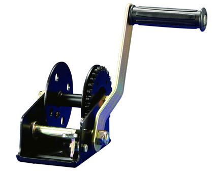

HARDWARE - 3-1/2" Cast Iron Pulley
1.3 1/2" cast iron sheave machined cast iron sheave
2. Heavy-duty zinc plated strap and bolts
3. Deep groove
4. Use with cable up to 1/4"
5. Use as master pulleys on curtain, feeder and drinker lines
6. Special specification and marks can be made according to customer's requirement.
